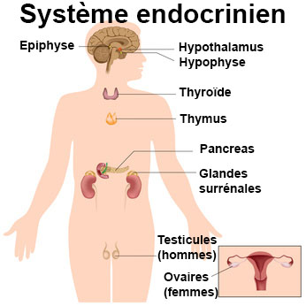

Bienvenue Sur Medical Education
La glande thyroede
Definitions : Les glandes et les hormones
Les glandes
Une glande est un amas de cellules secretant une ou plusieurs hormones et formant un tissu macro et ou microscopique.
- Glande exocrine : secretion d’une ou plusieurs substances en dehors du sang.
- Glande endocrine : secretion d’une ou plusieurs hormones deversee directement dans le sang ou la lymphe.
- Glande mixte : glande ayant a la fois une secretion exocrine et une secretion endocrine.
L'hormone est une substance a action physiologique specifique secretee par une glande endocrine, et qui apres avoir ete vehiculee par le sang, va exercer un effet determine en d’autres points du corps, sur un organe cible.
- Hormones aminees : derivent toutes d’un seul acide amine, la tyrosine.
- Hormones proteiques : concernent la plupart des hormones.
- Hormones steroedes : synthetisees e partir du cholesterol.
Anatomie de la glande thyroede
La thyroede est la plus volumineuse des glandes endocrines. Elle est situee a la face anterieure du cou, au-dessous des cartilages du larynx, contre la trachee dont elle recouvre les premiers anneaux.
Elle est constituee par deux lobes lateraux reunis l'un a l'autre par une portion retrecie, l'isthme. Elle a donc la forme d'un H.

Les hormones thyroediennes
Les hormones thyroediennes sont synthetisees et stockees au centre de la glande.
Ces hormones sont :
- La di-iodo-thyronine ou T2.
- La tri-iodo-thyronine ou T3.
- La tetra-iodo-thyronine ou thyroxine ou T4.
- La thyrocalcitonine.
Les hormones thyroediennes sont riches en iode. L'iode est fixe sur la glande qui l'utilise pour la synthese des hormones. Aussi la presence d'iode est indispensable a l'activite de la thyroede, toute carence en iode determinant un hypofonctionnement thyroedien et l'apparition d'un goitre.
Physiologie du corps thyroede
Actions metaboliques
La thyroede active le processus de combustion au niveau de la cellule. Elle agit ainsi :
- Sur l'energie liberee par les cellules : l'hypofonctionnement de la thyroede entraene une diminution de l'activite cellulaire.
- Sur le metabolisme des glucides, des lipides, des protides dont elle accelere l'utilisation par les cellules de l'organisme, utilisation diminue en cas d'hypofonctionnement.
- Cette augmentation du metabolisme general entraene une elevation des echanges respiratoires, une augmentation du volume sanguin circulant et du debit cardiaque se traduisant cliniquement par les palpitations et les bouffees de chaleur en cas d'hyperfonctionnement thyroedien; l'hypothyroedie entraene les phenomenes inverses.
- Sur une augmentation de la production de chaleur par l'organisme.
La thyroede a une action de stimulation sur la croissance. L'insuffisance thyroedienne entraene un retard de croissance. A l'inverse un hyperfonctionnement thyroedien entraene une croissance rapide.
Actions tissulaires
La thyroede agit sur les differents tissus de l'organisme, elle agit :
- Sur les cartilages de conjugaison dont elle prepare la maturation et l'ossification.
- Sur l'appareil genital : developpement genital lors de la puberte.
- Sur les poils, ongles, dents dont elle favorise la croissance.
- sur les cellules du systeme nerveux : developpement intellectuel et psychique.
Elle agit sur le metabolisme du calcium : elle entraene une hypocalcemie (baisse du taux sanguin du calcium). Elle agit egalement sur le phosphore, entraenant une hypophosphoremie.
Connexions de la glande thyroede
La thyroede obeit a une hormone secretee par le lobe anterieur de l'hypophyse : la thyreostimuline ou TSH.
L'hypophyse elle-meme est sous la commande de l'hypothalamus qui secrete une hormone stimulant la secretion par l'hypophyse de TSH, c'est la TRF.
La secretion de TRF et donc de TSH, est determinee par le taux des hormones thyroediennes circulantes : augmentation de la secretion en cas de baisse du taux des hormones thyroediennes, et inversement.
La secretion de la thyrocalcitonine est independante de l'hypophyse et depend du taux de la calcemie, toute hausse de celle-ci entraenant l'accroissement de la secretion hormonale et inversement.
Voir aussi :